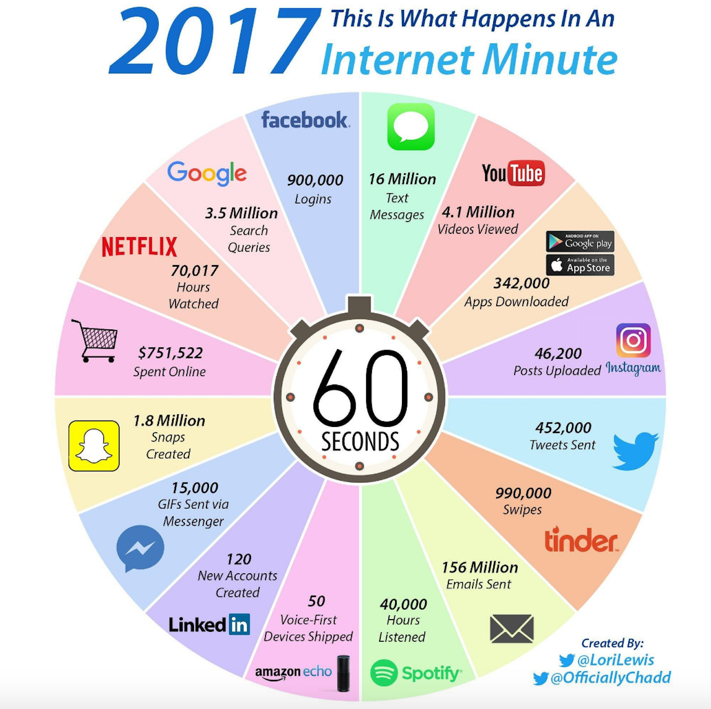
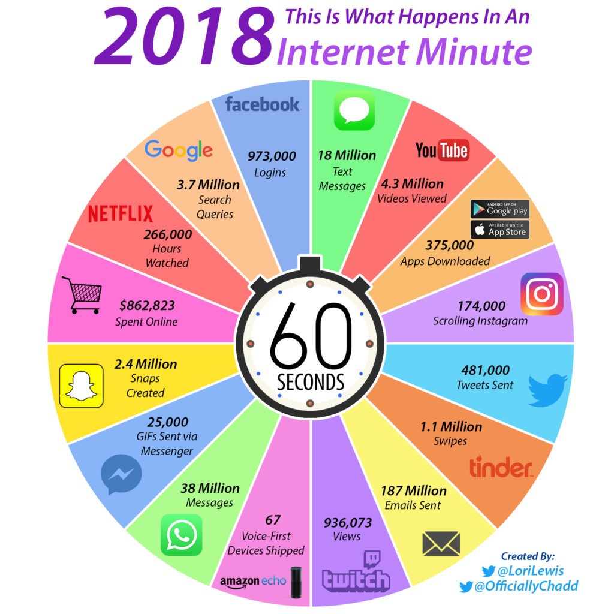
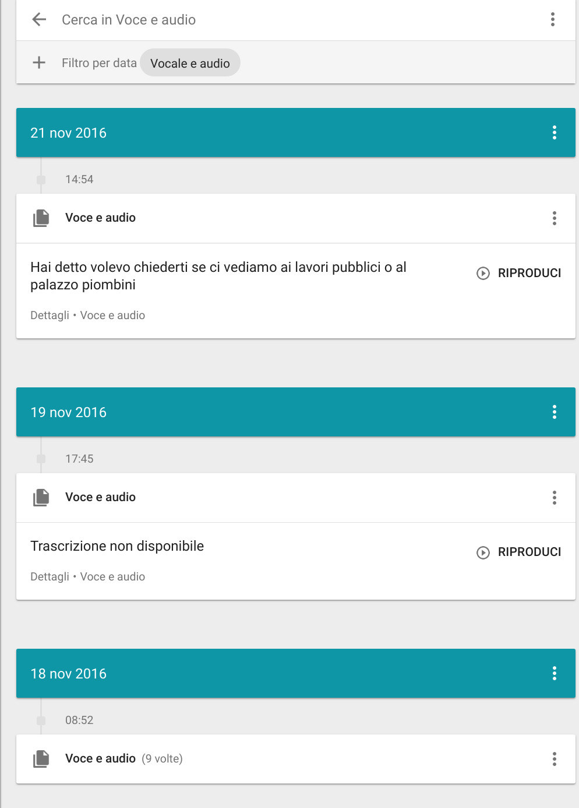
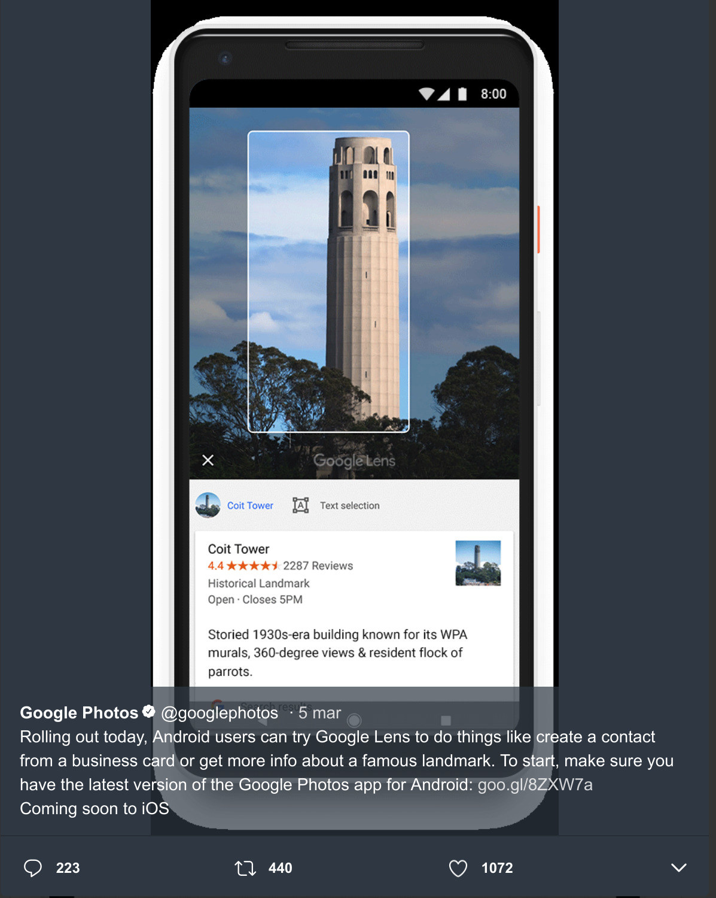

Hacking civico: diventare cittadini attivi anche attraverso i dati aperti
Matteo Fortini - Cento, 2019-03-07
Quest'opera è distribuita con Licenza Creative Commons Attribuzione 4.0 Internazionale.
Hacker
Hack
Jugaad
Frugal innovation
Jugaad
Frugal innovation
Hacking
Princìpi:
- Applicarsi a problemi concreti
- Con metodi anche non convenzionali
- Do-ocracy. L'autorità la si guadagna sul campo
- Senza pregiudizi "it's ok to call bullshit on anything"
- Apertura e condivisione
Applicarsi a problemi concreti
- Non si fanno esercizi di stile
- "Scegli il tuo supercattivo e trova il modo di distruggerlo"
- Si diventa civic hacker anche per disperazione
Metodi anche non convenzionali
- Creatività: non solo competenze tecniche
- Insanity is doing the same thing over and over again and expecting different results. (no, non è Einstein)
Do-ocracy
- L'autorità la si guadagna sul campo.
- Chi ha tempo/volontà, fa
Senza pregiudizi
- Non esiste un "ipse-dixit"
- Metodo scientifico
- It's ok to call bullshit on anything
Apertura e condivisione
- Copyright e copyleft
- L'ufficio brevetti
- Le licenze "virali"
Obiettivi
- Risolvere un problema
- Evidenziare un problema
- Abilitare
Abilitanti
- Open data
- Open source
Hacking civico
Applicare principi e metodi dell'hacking alla società civileRisolvere un problema
Risolvere un problema
Evidenziare un problema
Le buche stradali
Evidenziare un problema
Una mappa per amica
https://dariaq.wixsite.com/unamappaperamica/Abilitare
The beginning of the Gospel of John from a copy of the 1526 edition of William Tyndale's New Testament at the British Library
Abilitare
Come fare le cose
www.foiapop.itAbilitare
Rendere fruibili le informazioni
http://www.confiscatibene.itAbilitare
Rendere fruibili le informazioni
https://umap.openstreetmap.fr/it/map/siti-contaminati-della-regione-emilia-romagna-rapp_46431Abilitare
Rendere fruibili le informazioni
www.visualcad.it/Abilitare
Rendere fruibili le informazioni
lab.gedidigital.it/finegil/2017/italia-delle-slot/Abilitare
AlboPOP
https://www.albopop.itAbilitare
AgOpenDi: TerremotoCentroItalia
https://www.terremotocentroitalia.infoEssere buoni civic hacker
- Studiare: imparare regole, linguaggi
- Informarsi
- Raccontare e condividere
- Collaborare
- Dialogare (anche con le istituzioni)
Dati e open-data
- Without data, you're just another person with an opinion (W. Edwards Deming)
- Without an opinion, you're just another person with data (Forbes)
- Everyone is entitled to his own opinion, but not to his own facts. (Daniel Patrick Moynihan)
- There are three kinds of lies: lies, damned lies, and statistics
- Non tutto quello che si trova su internet è vero (Cartesio)
Perché i dati?
 
Siamo produttori di dati
Intelligenza Artificiale
Open Data
Dati + Licenza d'uso
- CC-By
- CC-By-SA
CC-By-NC-...